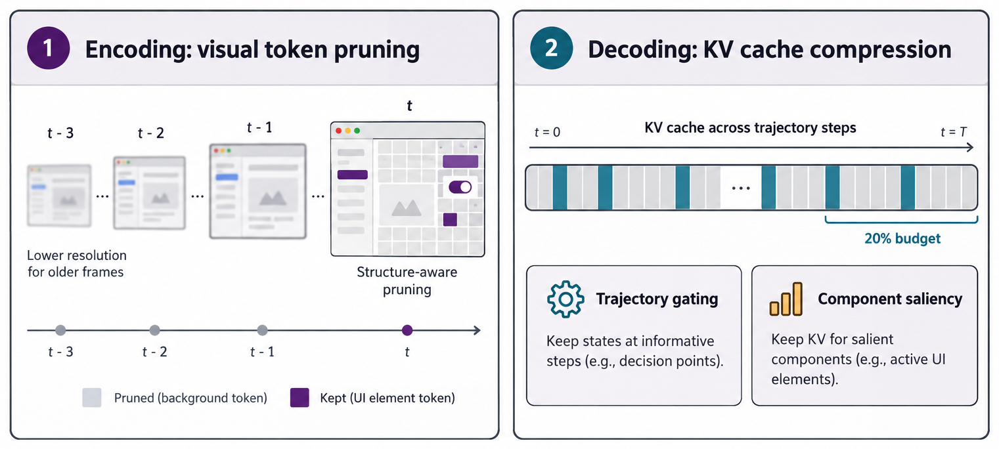

三、课题研究内容
□ 研究一 · 前期探索：纯 GUI 范式下的推理效率优化（已完成）
前期·效率
GUI
■ 问题：长程 GUI 轨迹中高分辨率截图持续累积，视觉 token 与 KV 缓存（KV Cache）线性膨胀；通用压缩方法忽视帧间冗余与界面二维结构

编码端 GUIPruner（已投稿 KDD 2027）｜ 解码端 ST-Lite（EMNLP 2026）（示意图）
1/3.4
GUIPruner：FLOPs 降至约 1/3.4，性能保留 >94%
3.3×
GUIPruner：视觉编码加速
20%
ST-Lite：KV 缓存预算即与完整缓存相当
最高 2.35×
ST-Lite：压缩至 20% 时的解码加速
开销可以显著压缩，但纯 GUI 范式以逐步截图为主要观测的方式未变 → 范式本身是否合理？